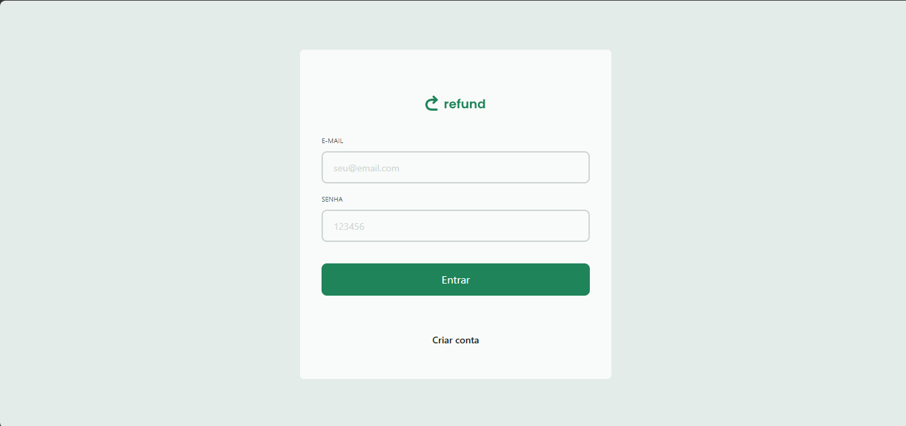
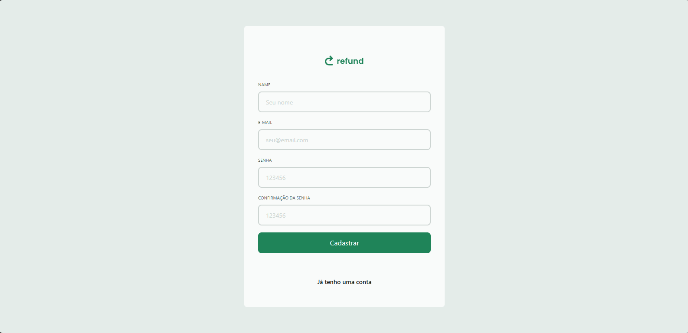
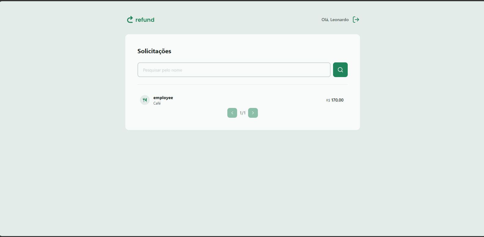
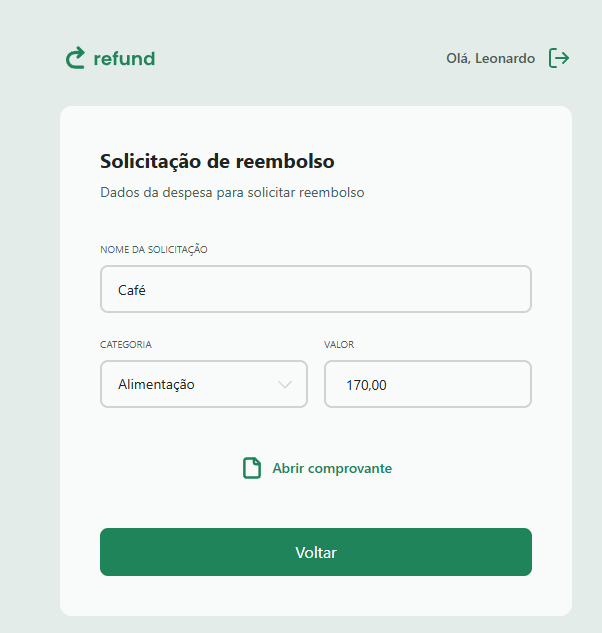

Refund 2.0
⚠️ Projeto disponível para execução local via GitHub.
Contexto
O Refund é uma aplicação Full Stack para gerenciamento de solicitações de reembolso, desenvolvida para simular fluxos corporativos reais. O sistema permite que funcionários enviem solicitações de reembolso com comprovantes anexados, enquanto gerentes acompanham, filtram e visualizam os pedidos através de um painel administrativo. O frontend foi desenvolvido utilizando React, TypeScript, Vite e TailwindCSS, proporcionando uma interface moderna e responsiva. Já o backend foi construído com Node.js, Express, Prisma ORM e SQLite, implementando autenticação JWT, upload de arquivos e controle de permissões por perfil. O projeto demonstra a integração completa entre frontend, backend, banco de dados e armazenamento de arquivos, simulando um ambiente próximo ao encontrado em aplicações corporativas.
Desafio
Os principais desafios encontrados durante o desenvolvimento foram:
- Implementar autenticação segura utilizando JWT e persistência de sessão.
- Criar controle de acesso baseado em perfis diferentes (Employee e Manager).
- Desenvolver um fluxo completo de solicitação de reembolso envolvendo cadastro, upload de comprovantes e acompanhamento.
- Implementar upload de arquivos utilizando Multer e disponibilização segura dos comprovantes enviados.
- Garantir comunicação eficiente entre React e API REST através do Axios.
- Implementar paginação e filtros para melhorar a experiência dos gestores.
Solução
A solução foi implementada utilizando:
- React + TypeScript: construção da interface utilizando componentes reutilizáveis.
- React Router: gerenciamento das rotas da aplicação.
- TailwindCSS: estilização responsiva seguindo abordagem Mobile First.
- Axios: comunicação entre frontend e backend.
- Node.js + Express: desenvolvimento da API REST.
- Prisma ORM: manipulação segura do banco de dados.
- SQLite: persistência dos dados da aplicação.
- JWT: autenticação e controle de acesso baseado em perfil.
- Multer: upload e gerenciamento dos comprovantes enviados pelos usuários.
Resultado
O sistema foi concluído com sucesso e permite a realização completa do fluxo de reembolso dentro da aplicação.
- Cadastro e autenticação de usuários.
- Controle de acesso por perfil (Funcionário e Gerente).
- Criação de solicitações de reembolso.
- Upload de comprovantes fiscais.
- Consulta e visualização detalhada das solicitações.
- Listagem paginada para gestores.
- Pesquisa e filtros de reembolso.
- Persistência segura dos dados utilizando Prisma ORM.
- Interface responsiva para dispositivos móveis e desktop.
Como executar localmente
- Clone o repositório do projeto:
git clone https://github.com/soarezzgzs/web.git - Entre na pasta do backend:
cd fullstack_refund_api-main - Instale as dependências:
npm install - Inicie a API local:
npm run dev - Saia da pasta do backend:
cd .. - Entre na pasta do frontend:
cd web - Inicie a aplicação local:
npm run dev - Abra o navegador e navegue para
http://localhost:5173
Aprendizados
- Implementação de autenticação JWT em aplicações Full Stack.
- Gerenciamento de estado de autenticação utilizando Context API.
- Controle de permissões baseado em perfis de usuário.
- Upload e armazenamento de arquivos utilizando Multer.
- Integração entre React, Axios e APIs REST.
- Validação de formulários com Zod.
- Organização de projetos utilizando arquitetura modular.
- Manipulação de banco de dados através do Prisma ORM.
- Desenvolvimento de aplicações corporativas baseadas em regras de negócio reais.
Capturas de Tela
Abaixo estão algumas capturas de tela do projeto em funcionamento:



